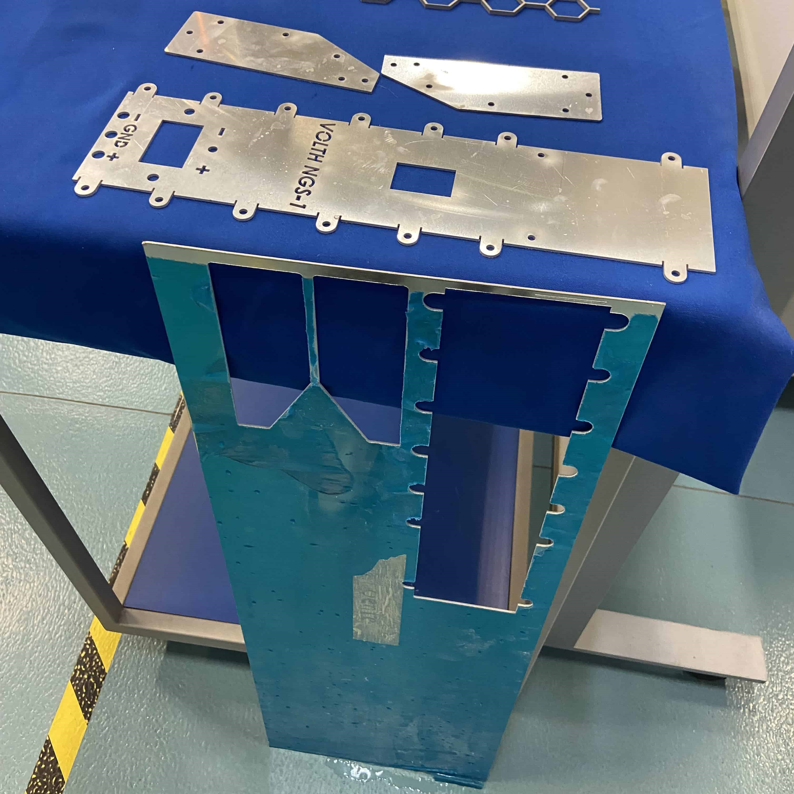

Evidencias




Para mi clase de "Fundamentación electrónica" en el cuarto semestre de la carrera de Ingeniería en Robótica y Sistemas Digitales creé una fuente de alimentación variable de -15 a +15 Volts con una carcasa metálica doblada, le meta de este proyecto fue poner a prueba mis habilidades para crear elementos de chapa metálica doblada de gran calidad aplicándolo a un proyecto real.
La fuente cuenta con dos potenciometros que permiten regular el voltaje positivo y negativo de manera independiente, un switch mecánico permite seleccionar el voltaje que se despliega en un voltímetro de 3 pantallas de 7 segmentos, cuenta con conectores banana para facilitar su transporte y ser más flexible a la hora de seleccionar las salidas que debemos conectar.
Para evitar accidentes la carcasa metálica está aterrizada y en dado caso que un componente interior se desolde, la corriente fluye por el cable de tierra y se evita el riesgo de electrocución al tocar el dispositivo.
El proceso de manufactura consisitió en cortar la carcasa en una cortadora de chorro de agua y doblar manualmente todas los pliegues de la pieza, finalmente se lijó y pulió para dar el cabado deseado y se ensamblo con el circuito de la fuente dentro.